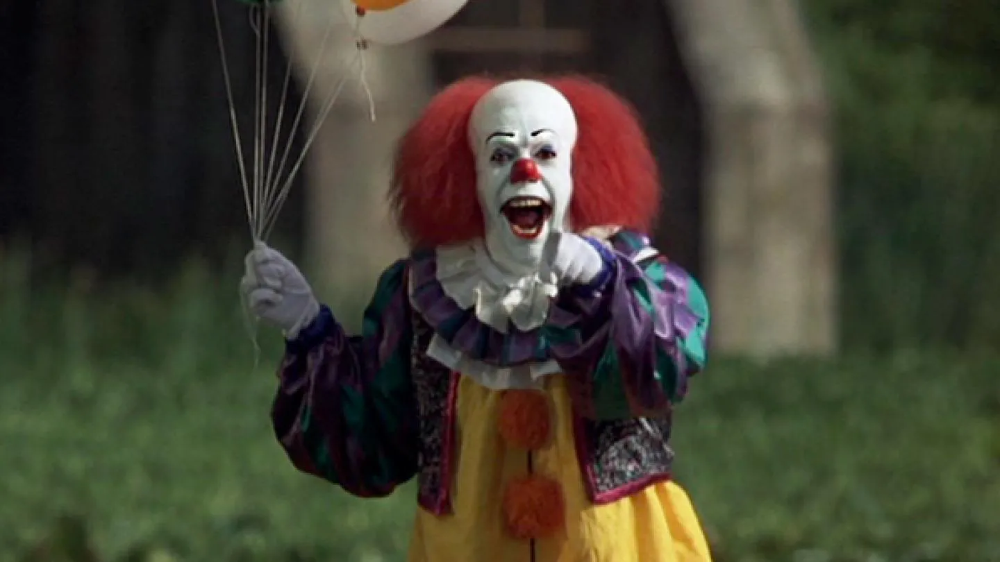
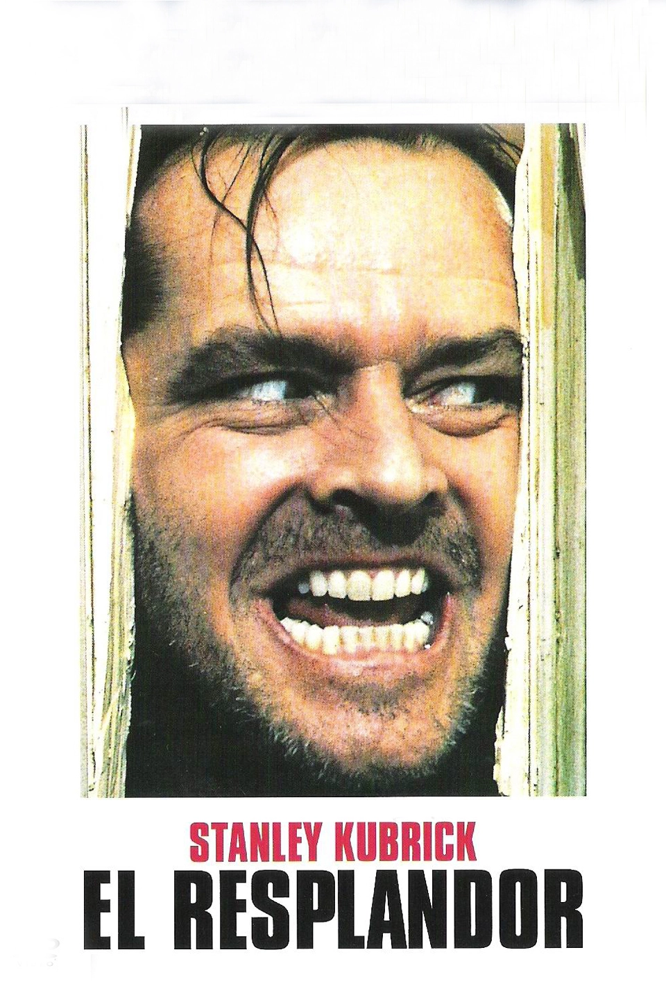
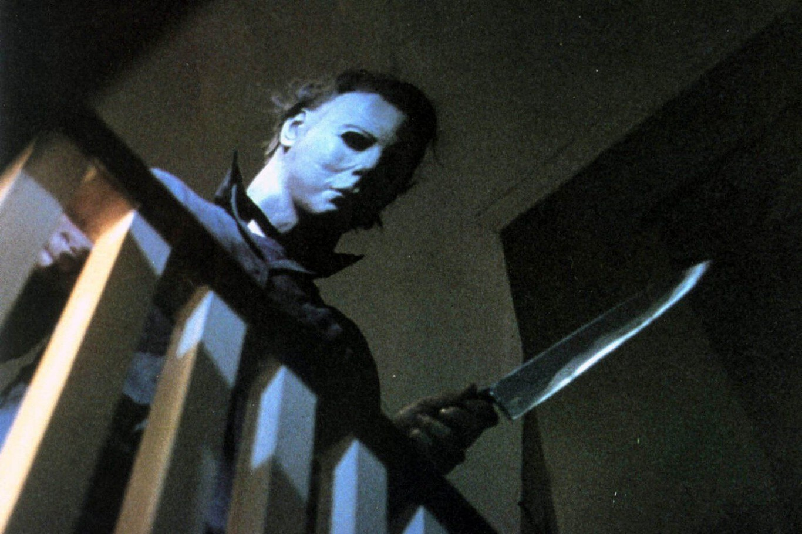

It (1990)

La historia gira en torno a un ser sobrenatural que tiene la capacidad de transformarse en los peores temores de su presa, lo que le permite explotar las fobias de sus víctimas. En su mayoría toma la forma humana de un payaso sádico y bromista llamado Pennywise. Los protagonistas son un grupo de niños marginados conocidos como "los perdedores" que descubren a Pennywise y juran destruirlo. La serie tiene lugar en dos períodos de tiempo diferentes, el primero cuando los perdedores se enfrentan por primera vez a Pennywise como niños en 1960 y el segundo cuando vuelven como adultos en 1990 para derrotarlo por segunda vez después del resurgimiento de la criatura.
El Resplandor (1980)

Relata la historia de Jack Torrance, un exprofesor que acepta un puesto como vigilante de invierno en un solitario hotel de alta montaña para ocuparse del mantenimiento. Al poco tiempo de haberse instalado allí junto con su esposa y su hijo, empieza a sufrir inquietantes trastornos de personalidad. Paulatinamente, debido a la incomunicación, al insomnio, a sus propios fantasmas interiores y, tal vez, a la influencia maléfica del lugar, se verá inmerso en una espiral de violencia contra ellos, que a su vez parecen víctimas de espantosos fenómenos sobrenaturales.
Halloween (1978)

En la noche de Halloween de 1963, en la ciudad suburbana ficticia de Haddonfield, Illinois, Michael Myers, un niño de seis años, apuñala a su hermana adolescente Judith con un cuchillo de cocina hasta matarla. Durante quince años, Michael es encarcelado en el Sanatorio Smith's Grove. El 30 de octubre de 1978, el psiquiatra de Michael, el Dr. Sam Loomis, acompañado de la enfermera Marion Chambers, llegan al sanatorio para acompañar a Michael (ahora un adulto de 21 años) al tribunal para un juicio; Loomis espera que el resultado del juicio de Michael sea encerrarlo de por vida. Sin embargo, Michael roba un auto y escapa de Smith's Grove, matando a un mecánico para robar su overol el camino de regreso a Haddonfield. Al regresar al pueblo, Michael roba un cuchillo, cuerdas y una máscara blanca e inexpresiva de la ferretería local.